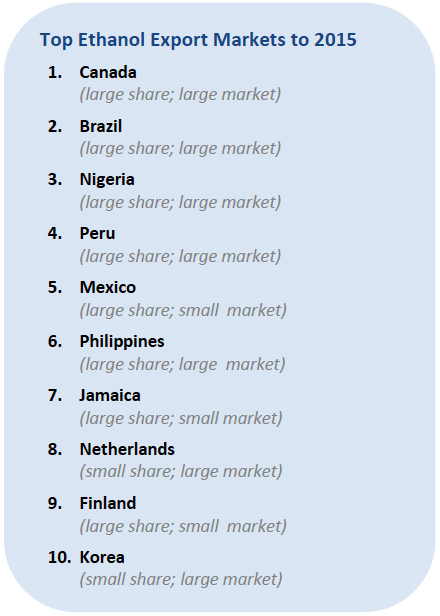

The United States is the world’s largest single producer and consumer of ethanol, followed by Brazil. Ethanol is a biofuel that is produced from a variety of sources (feedstocks), such as corn, wheat, sugar cane, sugar beet, and molasses. Less common feedstocks for ethanol include wood, municipal solid waste, and cellulosic materials from agricultural waste.
Ethanol trade is growing across the globe, as countries either mandate or incentivize blending with gasoline. These policies are often motivated partly by the need to reduce greenhouse gas emissions or air pollution, and partly by the desire to be less dependent on oil imports.
Overview of the Renewable Energy Market
The overall volume of ethanol exports decreased over the 2011-2012 timeframe due to an extreme drought. However, in 2013, corn production had a complete rebound and there is expected to be a significant supply of ethanol in the immediate future. Nevertheless, due to the fragmented and diverse ethanol resources produced globally, U.S. exports in 2014-2015 will likely only capture 6 percent of non-U.S. global consumption Over the next two years, exports of U.S. ethanol to Europe are expected to be limited. Formerly one-third of all U.S. ethanol exports, by the end of 2013 only seven percent of exports were shipped to Europe (and an even smaller percentage to the EU member states). This decline is attributed by U.S. industry to the imposition in February 2013 of antidumping duties, which are being challenged in the EU courts.
Nevertheless, total exports of ethanol in 2013 were valued at over $1.5 billion. Over half of U.S. ethanol exports in 2013 were shipped to Canada, and industry is developing other markets such as Mexico, Peru, and the Philippines.
This Top Markets case study is provided as a resource for U.S. exporters by the International Trade Administration. Every effort has been made to ensure that the information presented in this report is complete and accurate as of the date of publication; however, the U.S. Government assumes no responsibility or liability for any errors or omissions. Readers are advised to independently verify any information contained in this intelligence brief prior to relying on it. The information provided in this report does not constitute legal advice. Readers are further advised to conduct their own due diligence and seek the advice of legal counsel before entering into business ventures or other commercial arrangements in this market.
The Ethanol Export Opportunity in the Near-Term
Through 2015, Canada and Brazil are expected to import more ethanol than any other market. Both markets have historically been key export destination for ethanol producers in the United States, and several firms enjoy considerable commercial relationships with producers, suppliers, and other parts of the ethanol supply chain in these locations.

ITA, however, also strongly encourages U.S. exporters to position themselves for opportunities that are emerging in Asia. In particular, India is beginning to enforce its blending requirements and thus far does not have sufficient domestic ethanol supply to meet its expected demand. The end of 2013 saw significant shipments to China for the first time, despite a de facto bias towards the domestic industry. Exporters will likely experience strong competition in Asia from suppliers in Thailand, where the Thai Government is aggressively pursuing policies to increase ethanol production. In 2012, Thai producers exported over 300 million liters of ethanol, mostly to other Asian destinations like the Philippines, Singapore, and Korea.
Consumption of ethanol in the EU is expected to continue to rise in the near term, but exports from the United States remain stymied by antidumping duties in Europe. In addition, some U.S. ethanol exporters will face sustainability certification requirements under the Renewable Energy Directive that may limit their access to the market, as all biofuels producers importing product into the EU must provide evidence that they have reduced greenhouse gas emissions by at least 35 percent compared to fossil fuels. The mandate increases after 2017, requiring a verified reduction of at least 50 percent, and at least 60 percent for new installations.
On top of this, several EU member states have developed national voluntary systems, in addition to the 13 voluntary schemes adopted by the European Commission.i And even more regulation could be on the way, as the EU continues to debate limits on crop-based ethanol as part of the EU’s overall 10 percent mandate, causing uncertainty even for European producers. As a result, ITA anticipates significant difficulty for U.S. ethanol exporters in the EU and possibly a further reduction in market share through 2015.
Planning for the Long-Term
Demand for ethanol is expected to increase into the medium-and-long-term. Several countries have intensifying mandates for ethanol use, particularly to limit the carbon emissions associated with vehicle fleets. As the world’s leading producer of ethanol, this expected growth should provide considerable export opportunities. Companies are encouraged to work closely with ITA and the Foreign Agricultural Service of the U.S. Department of Agriculture to ensure they are ready and able to take advantage of export opportunities when they arise.
However, U.S. exporters should remain mindful of several barriers to continued long-term growth, including antidumping duties, sustainability certification requirements, and protectionist policies that require buyers to purchase ethanol from local producers. In some markets, such South Africa, blending is limited to domestically produced ethanol.

1. EU Biofuels Annual, August 2013, USDA Foreign Agricultural Service, http://gain.fas.usda.gov/Recent%20GAIN%20Publications/Biofuels%20Annual_The%20Hague_EU-27_8-13-2013.pdf (page 7)
About the Office of Energy and Environmental Industries
The Office of Energy and Environmental Industries (OEEI), a part of the International Trade Administration’s Industry and Analysis unit, is dedicated to enhancing the global competitiveness of U.S. energy and environmental companies, expanding their market access, and increasing their exports. Industry analysts perform strategic research and analysis in order to shape and implement trade policy, create conditions that encourage innovation, lower the cost of doing business, and promote U.S. economic growth. For more information or to access other reports related to the Renewable Energy and Energy Efficiency Export Initiative, contact the office at (202) 482-5225 or visit www.export.gov/reee.
The International Trade Administration’s mission is to create prosperity by strengthening the competitiveness of U.S. industry, promoting trade and investment, and ensuring fair trade and compliance with trade laws and agreements.